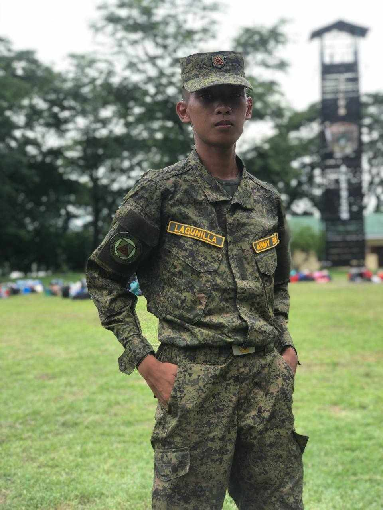

I recently created a page with Nicole in mind,
aiming to impress the girl I like. I genuinely
enjoyed working on it, and it means a lot to me.
Nicole holds a special place in my heart, and I
hope this page reflects my genuine feelings for
her. I put a lot of thought and effort into it
because she's important to me. I'm looking forward
to sharing it with her and hoping she appreciates
the sentiment behind it. Regardless of her response,
I'm glad I had the opportunity to express myself and
show my admiration for her.
Fingers crossed that she likes it too!
About ME
IT Student & ROTC officer
I love to help people in need, and it brings me great joy to see their smiles when I can make a difference in their lives. I appreciate the special connections I've made, including the friendship of a wonderful girl who has been a supportive presence in my life. Alongside all my friends and fellow cadet officers, especially my buddies, we share unforgettable moments and support each other in our endeavors. Being surrounded by such caring individuals makes every day more meaningful and fulfilling.

OFFICER
"I'm an ROTC Officer studying IT at TUA. I recently completed a 28-day RSCT MS31 and MS32 training at Camp Aquino, Tarlac. The training included firing the M16 rifle, rappelling from a 50-foot tower, map reading, and more. It was a challenging and enriching experience!"
STUDENT
As a second-year BSIT student at Tarlac Agricultural University, I'm captivated by the world of programming and gaming. Crafting algorithms and building software excite me, while gaming fuels my creativity and strategic thinking. I aim to excel in both realms, making a positive impact in the ever-evolving landscape of IT and gaming.